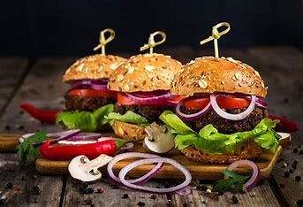

Satisfy your cravings with the ultimate comfort food experience - our Juicy Cheeseburger with Caramelized Onions recipe. Crafted to perfection, this burger is a symphony of flavors and textures, guaranteed to elevate your burger game to new heights. From the juicy beef patty to the crisp bacon, melty cheese, and sweet caramelized onions, every bite is a delicious journey that will leave you craving more.
Sink your teeth into the Juicy Cheeseburger with Caramelized Onions and let the explosion of flavors envelop your palate. The combination of smoky patty, melted cheese, and tender caramelized onions creates a symphony of taste sensations that will leave you utterly satisfied. Whether enjoyed at a backyard barbecue, a casual dinner with friends, or a solo indulgence, this burger is sure to become a favorite in your culinary repertoire. So fire up the grill, gather your ingredients, and get ready to experience burger bliss like never before.